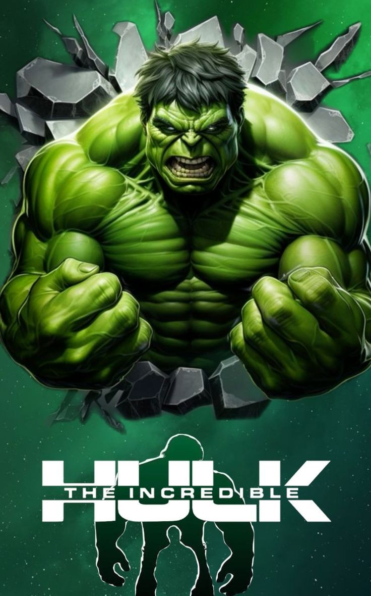

Overview
Scientist Bruce Banner (Edward Norton) desperately seeks a cure for the gamma radiation that contaminated his cells and turned him into The Hulk. Cut off from his true love Betty Ross (Liv Tyler) and forced to hide from his nemesis, Gen. Thunderbolt Ross (William Hurt), Banner soon comes face-to-face with a new threat: a supremely powerful enemy known as The Abomination (Tim Roth).

Watch / Download
Watch NowDirector
Louis Leterrier
Producer
AviArad
Cast
- Edward Norton - Bruce Banner/Hulk
- Liv Tyler - Dr. Betty Ross
- Tim Blake Nelson - Samuel Stern
- Willium Hurt - Thaddeus Ross
- Ty Burrell - Doc Samson
- Paul Soles - Stanley
- Tim Roth - Abomination
Release Date
Jun 20, 2008